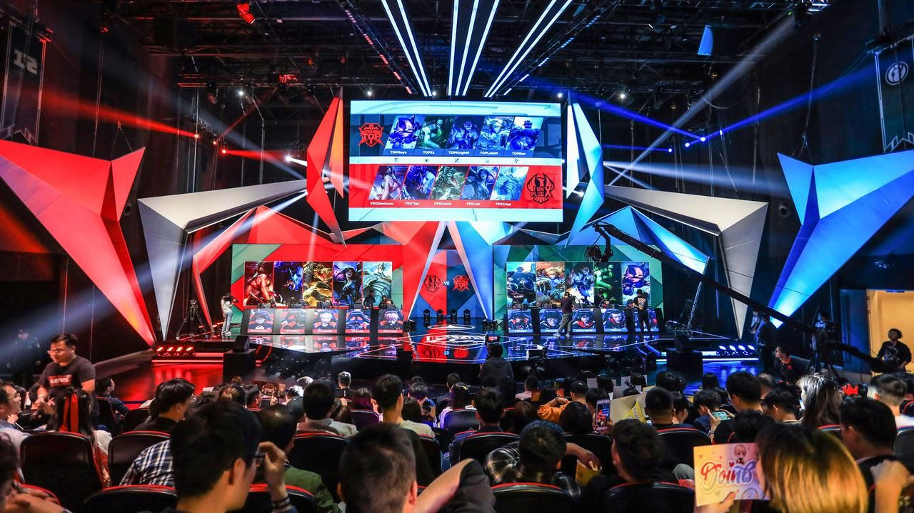
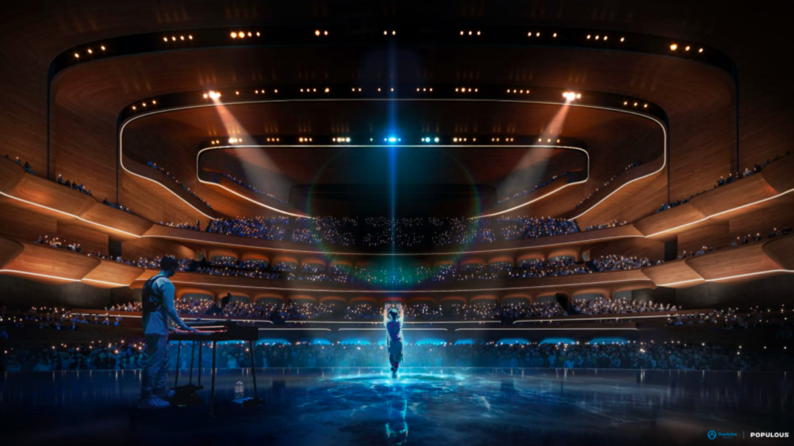
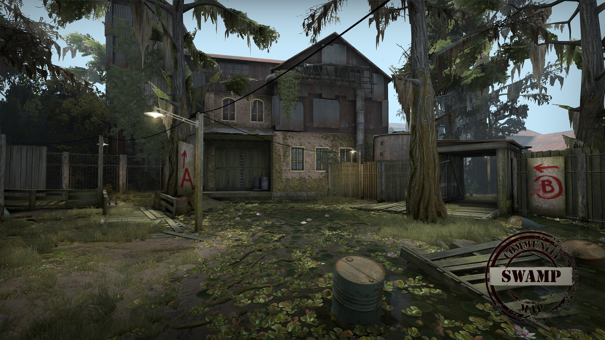

THE GAMES, MOVIES AND TV YOU LOVE
Je tak trošku známym faktom, že komunistická Čína je iným svetom. Napríklad od roku 2019 môže človek naplno vykonávať pozíciu prevádzkovateľa esport a esportového profesionála. Nie je to ale tak dlho, čo si môžete v odvetví esport zaškrtnúť "hráč" ako plnohodnotné povolanie.
Děje se tak díky tamějšímu Ministerstvu lidských zdrojů a sociálního zabezpečení, kdy úřad uznává až 13 profesí, které lze vykonávat v odvětví esportu na odlišných postech – profesionální hráč, manažer týmu, manažer turnaje, trenér a další. Průměrní hráči týmu se mohou vyšplhat až na pět úrovní, přičemž první je nejnižší a poslední nejvyšší. Pojí se s tím i výše platu, hráč na nejvyšší úrovni inkasuje největší zisky.
Elektronické športy sa v poslednom desaťročí rozrástli medzi všetkými generáciami po celom svete. Vďaka novému projektu sa v kanadskom meste Toronto vybuduje úplne nová ešportová aréna, ktorá bude mať 7000 sedačiek, čo je už slušné číslo. Aj keď sa zaiste kapacitou nevyrovná štadiónom pre fyzické športy, je to stále veľký pokrok.
Nápad, ktorý je zatiaľ stále bez názvu, oznámili majitelia kanadských Overwatch a Call of Duty teamov. V Toronte to má byť dokonca prvé vybudovanie športovej a zábavnej arény od rekonštrukcie futbalového BMO štadiónu v roku 2007. Projekt vyzerá veľmi futuristicky, čo je pre herné odvetvie obzvlášť typické.
Odhaduje sa, že za rok sa v nej bude môcť konať až 200 rôznych eventov. Ak nepôjde o oficiálne herné zápasy, uvidíme v nej rôzne konferencie, odovzdávania cien a podobne. Majitelia taktiež dúfajú, že aréna priláka na scénu množstvo nových profesionálnych organizácií.
Zaiste jeden z horších vianočných darčekov mal tento mesiac dostať iba 6-ročný Warzone hráč a streamer RowdyRogan. Ide o ban, ktorý dostal v živom vysielaní na svoje obľúbené Call of Duty: Warzone. Na YouTube a Twitchi má dokopy niečo cez 300 tisíc sledovateľov, čo je vzhľadom na jeho veľmi nízky vek skutočne obdivuhodné číslo. Po incidente sa ho pokúsil upokojiť otec, ktorý to však sám takisto nezvládal.
As some of you know, Rogan was banned from Warzone on stream tonight. The Team and us are currently trying to handle the situation and will keep you guys updated. Thank you for all the support. #FreeRogan pic.twitter.com/df1B28Fa8R
— RowdyRogan (@RowdyRogan) December 10, 2020
V klipe je vidieť, že chlapec bol zabanovaný, keď bol v menu. Mnohí boli z klipu skutočne zhrození. Mladý talent s rodičmi, ktorí ho podporovali v úspešnom rozvoji mal pred svojou kariérou spád. Koniec koncov šlo iba o falošný poplach, ktorý táto rodinka spravila naschvál.
Určite si za posledný mesiac počul o tom, že niektorí CS:GO tréneri dostali ban za využívanie bugu, s ktorým išlo sledovať hru z pohľadu spectatora, čo však nie je povolené. Využili to najmä vďaka tomu, že sa zápasy hrali online a nedalo sa na nich tak jednoducho prísť. Nakoniec sa na to ale ESL pozrelo oveľa dôkladnejšie, načo dostalo ban až 37 CS:GO trénerov.
Všetko to začalo coachmi teamov MIBR, Heroic a Hard Legion. Komisia ešportovej integrity oznámila, že bug využívalo skutočne veľa teamov. Zaujímavé ale je, že zatiaľ dokázali v spolupráci s ESL pozrieť iba 20% zápasov. Znamená to teda, že 37 pravdepodobne nie je finálne číslo. Teamy, ktoré túto chybu hry zneužívali sa môžu zaiste báť, keďže prídu taktiež o tournament body.